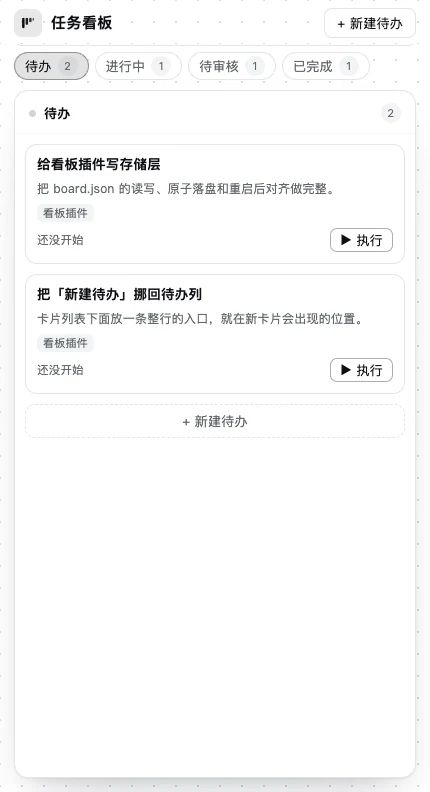
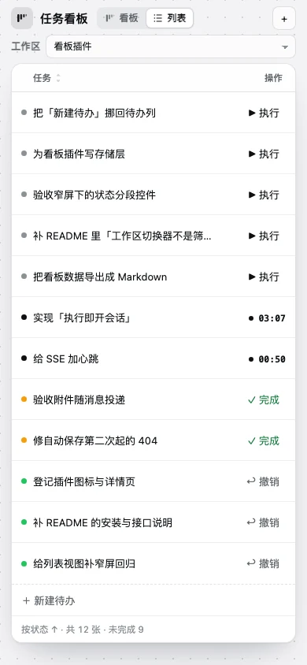
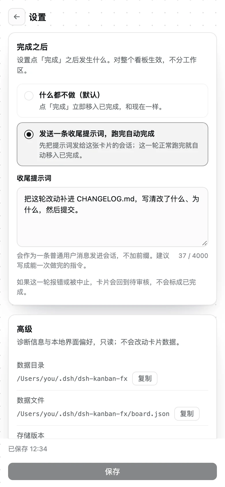

给列表补多选与批量完成
勾选多行后一起完成 / 撤销，表头补一个全选框。
看板插件还没开始▶ 执行
DSH Web 插件 · v0.5.0
给 DeepSeek Harness 做的任务看板：待办、进行中、待审核、已完成四列跟着会话走。点卡片上的「执行」，插件直接在那个工作区建会话、把卡片内容投进去并立刻开跑——不经过新建会话页。
01为什么是看板
想法往往只完整三秒。看板把「记下来」和「开始做」拆成两步，又把两步接在同一条线上：卡片存住想法，点执行就把想法原样送进会话。
卡片内容就是首条消息：手写标题作为第一行，正文原样跟在后面。工作区在新建时已经选好，执行时不用再找一遍。
会话跑完进待审核；你回去继续说话又回到进行中；满意就点完成。四列是会话状态的倒影，不是另一份要维护的清单。
设置里写一条收尾提示词，点完成后先发进这张卡片的会话；这一轮正常结束才自动完成，报错或中止就退回待审核，不猜成功。
02一条卡的旅程
标题、正文、附件、所属工作区。新建卡片会先自动存成草稿，编号 fx-12 点一下即可复制。
待办插件在那个工作区建会话，把卡片内容投成首条消息并立刻开跑；面板直接跳到会话，你可以马上补话。
进行中一轮结束自动落回待审核，并带上这一轮用时。点开进普通会话页看结果，继续说话就回到进行中。
待审核在看板、列表或会话标题栏点「完成」都行。默认立即移入已完成并可撤销；开了收尾提示词就先跑最后一轮。
已完成收尾中 不是第五种状态：它仍算进行中，列、排序、筛选、计数都不变，只是文案和圆点换成收尾。窄屏下四列会收成「状态分段 + 单列」，流程顺序不变。
03界面
颜色全部走 DSH 的 --dsw-alias-* token，深浅色跟着站点主题一起换。点图可以放大。
一列一个状态。卡片上直接执行、完成、撤销；已完成默认折成一行标题，一屏放得下更多历史。
同一批卡片换成平铺表格：状态是行内字段，表头可排序，默认按流程顺序把待办放在最前。视图和排序记在浏览器本地。
右上角切换器和侧边栏切工作区等价，一次只看一个；从工作区「…」菜单进来就直接落在那一个上。
700px 以下看板换成状态分段 + 单列，列表只留任务与操作；新建入口一直在，430px 以下收成「＋」。
三张窄屏自查图：看板、列表、设置。同一套组件，不是另做的移动端。



04抠过的细节
数据新鲜度、收尾兜底、窄屏回流——这些不在截图里，但决定了它能不能天天用。
看板看流程，列表看全量。切换只换内容区，选过的视图记在浏览器本地，下次进来还是它。
侧边栏每个工作区的「…」菜单第一项就是「打开任务看板」。点一下切到看板，并把切换器落在这个工作区上，不用进去再切一次。右键菜单里也是同一项。
默认折成约 32px 高的标题行，点开才展开完整卡片。展开状态只留在当前面板，刷新后回到折叠。
顶栏没有刷新按钮。变化推送 + 15 秒兜底轮询 + 回到前台 + 25 秒心跳，四层兜着，读失败才出现「重试」。
收尾轮正常结束才写完成时间；报错或中止只清标记、退回待审核。Host 重启后同样不猜成功。
普通会话页的标题栏会带上卡片状态和「✓ 完成」。点完成顺手把你看板带回这张卡片所在的工作区；开了收尾提示词就先发消息再回看板。
v1 不做拖拽排序、自定义列、看板内直接对话。状态由会话推进决定，少一套需要手动维护的真相。
05安装
公开仓库，任意机器都能装。插件只依赖 Node 内置模块和 Host 侧的 ctx 服务，没有构建步骤。
$ dsh plugin --profile desktop add github:xianglifei/dsh-kanban-fx开发时把 github:… 换成 link:/path/to/dsh-kanban-fx；也可以在 DSH 的 Plugins → Add plugin 里选目录。
装好后侧边栏出现「任务看板」图标；每个工作区行尾「…」菜单的第一项是「打开任务看板」，直接落到那个工作区。
内容会投进新会话并立刻开跑。跑完在待审核里看结果，满意就点「完成」；想让它自己收尾，去齿轮里写一条收尾提示词。
06先问一遍
看板存在本机 $DSH_HOME/dsh-kanban-fx/board.json（默认 ~/.dsh/dsh-kanban-fx/board.json）。卡片附件走 DSH 自己的附件服务，和新建会话输入框同一套落盘。插件只和本机 Host 通信，没有把看板上传到别处的逻辑。收尾提示词是明文存储，别放密钥。
它是工作区切换器，不是筛选器：一次只显示一个工作区，切换成本和在侧边栏切工作区一样。「全部工作区」是 v1 明确不做的范围，为的是让「卡片属于哪个工作区」始终只有一个答案。
默认「什么都不做」：点完成立即移入已完成，可以撤销。如果开启「发送一条收尾提示词」，卡片会进入进行中并显示「收尾中」，这一轮正常结束才自动完成；报错或中止回待审核，可以再点一次完成重试。收尾期间又去会话里补话，自动完成会落在下一轮（v1 不区分哪条是收尾消息）。
v1 都不做。看板不想维护第二套手动真相：状态由会话推进决定，排序交给列表视图的表头和看板的流程顺序。自定义列、子任务、截止日期、看板内对话也都不在范围内。
在 DSH 的插件页更新，或重新安装一次。Host（index.js）有改动时，要在 DSH 里把插件禁用再启用（或重启 DSH）才会加载新代码；只刷新页面只会更新 Client。看板数据不受影响。
不是，是社区第三方插件，与 DeepSeek 官方没有隶属关系。源码以 MIT 许可公开在 xianglifei/dsh-kanban-fx，欢迎提 issue 或自己改。
07下一步
装好之后，从侧边栏打开它。第一张卡不用想标题，写一句能读懂的话就够了。
dsh plugin --profile desktop add github:xianglifei/dsh-kanban-fx